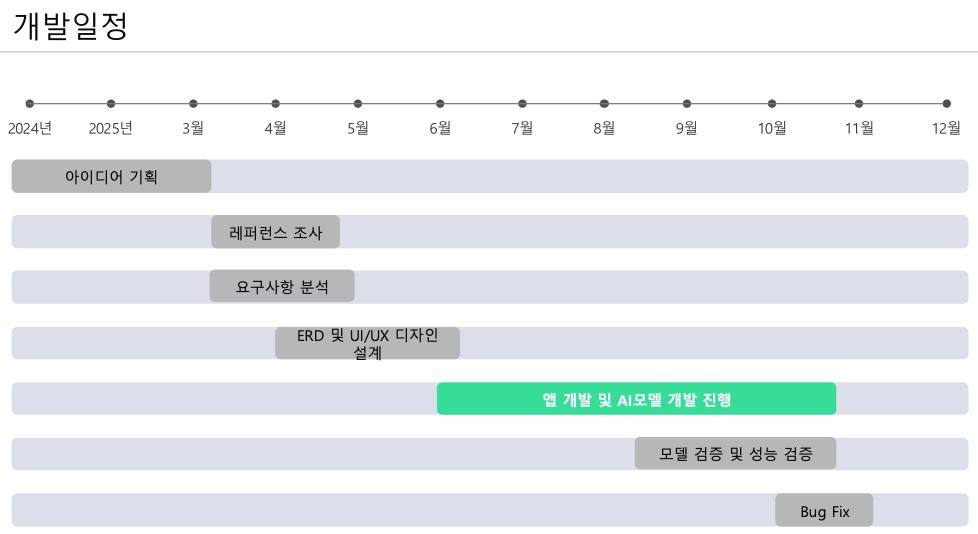

- 스마트폰 단일 기기로 스윙 분석·비거리 예측·개인화 피드백 제공
- YOLOv8n TFLite 온디바이스 추론 + Gemini 2.5 기반 텍스트 피드백
- Firebase 동기화·클라우드 후처리·사용자 맞춤 리포트
※ 이 페이지는 단일 HTML로 GitHub Pages에서 바로 동작.
작품설명
- 스마트폰 온디바이스 모델로 스윙/공 궤적을 실시간 분석.
- 클라우드 LLM이 코칭 문구·훈련 과제를 자동 생성.
- Firebase로 기록·비교·공유 일원화.
시스템 구성
- 안드로이드: Camera2/CameraX, ExoPlayer, Overlay ROI, BottomSheet UI
- 온디바이스 추론: YOLOv8n FP16/INT8 TFLite, XNNPACK·GPU delegate 선택
- 클라우드: Firebase Auth/Firestore/Functions/Storage
- LLM: Gemini 2.5 Pro 기반 피드백 생성(스트리밍 제외)
- 데이터:
ball-analyses, swing-analyses 컬렉션
- 왕복 최소화·리사이징·포맷 최적화로 체감속도 개선
성능 지표
• mAP 비교: 공/스윙, @0.5 및 종합(참고치)
지연/처리 시간
- 온디바이스 추론(FP16·XNNPACK): 평균 25–30 FPS
- 평균 추론 지연시간: 약 38 ms
실측 vs 예측
- 비거리 오차율: ±8.7%
- 예측값 245 m 기준 ±8% 범위
비고
- INT8 QAT 전환 시 추가 단축 기대, GPU delegate 선택적 사용
- 기기·세팅에 따라 수치 편차 존재(리포지토리 벤치마크 참조)
데모
프로토타입 영상 또는 GIF를 /assets 로 추가하십시오.
- 스윙 구간 자동 탐지 → 피처 추출 → 비거리 예측
- LLM 피드백: 자세·템포·임팩트 코칭 텍스트
- 결과 화면: 세션별 카드, 비교, 공유
타임라인

※ 포스터와 동일한 개발일정 이미지를 사용합니다. (/assets/timeline.png)
팀 & 고지
- 한신대학교 컴퓨터공학부: 송하빈, 주상혁, 박승정
- 지도교수: 박기홍
- SW중심대학사업 지원
연락처
- 이슈·기여: GitHub Issues
- 문의: 프로젝트 리드 이메일
• 개인정보·촬영 데이터는 동의하에 취급. 업로드 최소화 원칙.